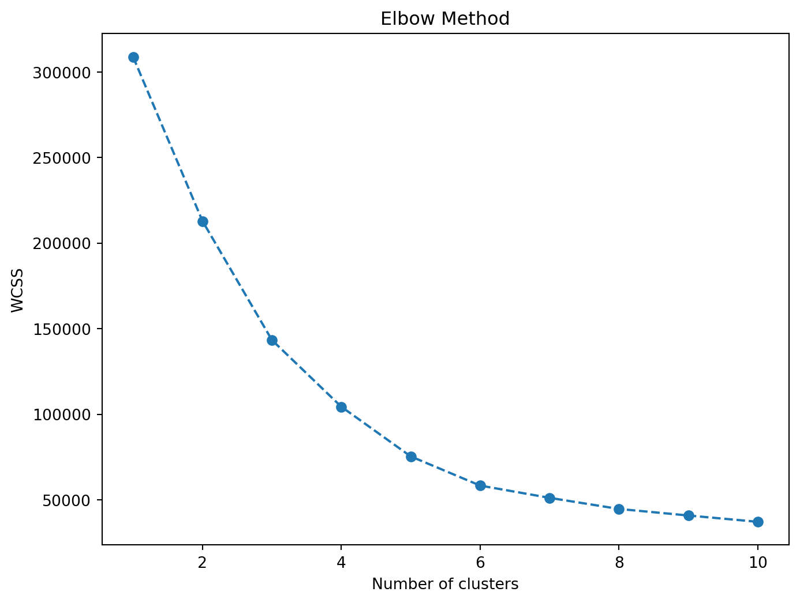
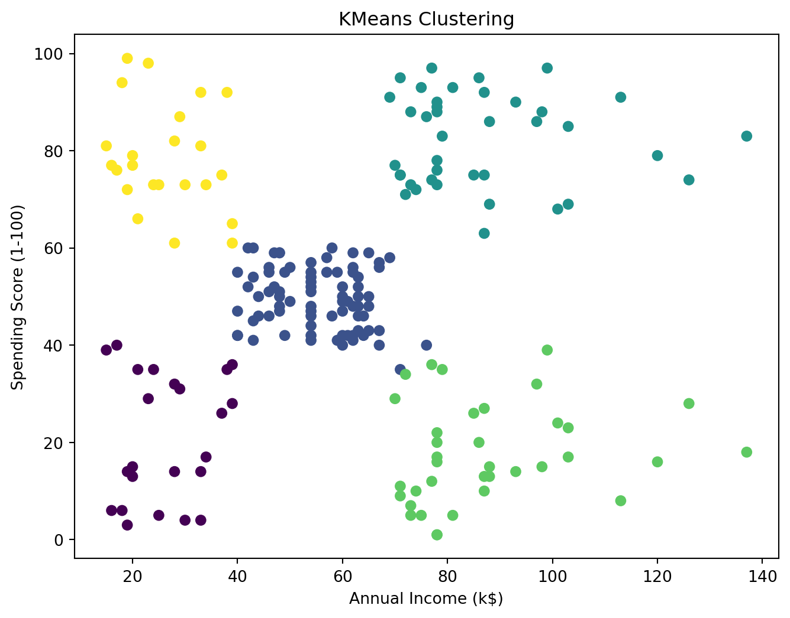

import pandas as pd
from sklearn.cluster import KMeans
from sklearn.preprocessing import LabelEncoder
import matplotlib.pyplot as pltClustering using Mall Customers Dataset
In here we will learn about clustering using K-means algorithm
df = pd.read_csv('data/Mall_Customers.csv')
df| CustomerID | Gender | Age | Annual Income (k$) | Spending Score (1-100) | |
|---|---|---|---|---|---|
| 0 | 1 | Male | 19 | 15 | 39 |
| 1 | 2 | Male | 21 | 15 | 81 |
| 2 | 3 | Female | 20 | 16 | 6 |
| 3 | 4 | Female | 23 | 16 | 77 |
| 4 | 5 | Female | 31 | 17 | 40 |
| ... | ... | ... | ... | ... | ... |
| 195 | 196 | Female | 35 | 120 | 79 |
| 196 | 197 | Female | 45 | 126 | 28 |
| 197 | 198 | Male | 32 | 126 | 74 |
| 198 | 199 | Male | 32 | 137 | 18 |
| 199 | 200 | Male | 30 | 137 | 83 |
200 rows × 5 columns
Dataset explanation
- CustomerID: Unique identification number for each customer.
- Gender: Categorical variable indicating the gender of the customer.
- Age: The age of the customer represented as an integer.
- Annual Income (k$): Represents the annual income of the customer in thousands of dollars.
- Spending Score (1-100): An index or score (ranging from 1 to 100) that measures a customer’s spending behavior.
df.info()<class 'pandas.core.frame.DataFrame'>
RangeIndex: 200 entries, 0 to 199
Data columns (total 5 columns):
# Column Non-Null Count Dtype
--- ------ -------------- -----
0 CustomerID 200 non-null int64
1 Gender 200 non-null object
2 Age 200 non-null int64
3 Annual Income (k$) 200 non-null int64
4 Spending Score (1-100) 200 non-null int64
dtypes: int64(4), object(1)
memory usage: 7.9+ KB# Selecting the features for clustering
features = df.iloc[:, 2:] # Selecting columns from 'Age' onwardfeatures| Age | Annual Income (k$) | Spending Score (1-100) | |
|---|---|---|---|
| 0 | 19 | 15 | 39 |
| 1 | 21 | 15 | 81 |
| 2 | 20 | 16 | 6 |
| 3 | 23 | 16 | 77 |
| 4 | 31 | 17 | 40 |
| ... | ... | ... | ... |
| 195 | 35 | 120 | 79 |
| 196 | 45 | 126 | 28 |
| 197 | 32 | 126 | 74 |
| 198 | 32 | 137 | 18 |
| 199 | 30 | 137 | 83 |
200 rows × 3 columns
K-means
# Using the Elbow method to find the optimal number of clusters
wcss = []
for i in range(1, 11):
kmeans = KMeans(n_clusters=i, init='k-means++', random_state=42)
kmeans.fit(features)
wcss.append(kmeans.inertia_)/Users/taufiq/anaconda3/lib/python3.11/site-packages/sklearn/cluster/_kmeans.py:1412: FutureWarning:
The default value of `n_init` will change from 10 to 'auto' in 1.4. Set the value of `n_init` explicitly to suppress the warning
/Users/taufiq/anaconda3/lib/python3.11/site-packages/sklearn/cluster/_kmeans.py:1412: FutureWarning:
The default value of `n_init` will change from 10 to 'auto' in 1.4. Set the value of `n_init` explicitly to suppress the warning
/Users/taufiq/anaconda3/lib/python3.11/site-packages/sklearn/cluster/_kmeans.py:1412: FutureWarning:
The default value of `n_init` will change from 10 to 'auto' in 1.4. Set the value of `n_init` explicitly to suppress the warning
/Users/taufiq/anaconda3/lib/python3.11/site-packages/sklearn/cluster/_kmeans.py:1412: FutureWarning:
The default value of `n_init` will change from 10 to 'auto' in 1.4. Set the value of `n_init` explicitly to suppress the warning
/Users/taufiq/anaconda3/lib/python3.11/site-packages/sklearn/cluster/_kmeans.py:1412: FutureWarning:
The default value of `n_init` will change from 10 to 'auto' in 1.4. Set the value of `n_init` explicitly to suppress the warning
/Users/taufiq/anaconda3/lib/python3.11/site-packages/sklearn/cluster/_kmeans.py:1412: FutureWarning:
The default value of `n_init` will change from 10 to 'auto' in 1.4. Set the value of `n_init` explicitly to suppress the warning
/Users/taufiq/anaconda3/lib/python3.11/site-packages/sklearn/cluster/_kmeans.py:1412: FutureWarning:
The default value of `n_init` will change from 10 to 'auto' in 1.4. Set the value of `n_init` explicitly to suppress the warning
/Users/taufiq/anaconda3/lib/python3.11/site-packages/sklearn/cluster/_kmeans.py:1412: FutureWarning:
The default value of `n_init` will change from 10 to 'auto' in 1.4. Set the value of `n_init` explicitly to suppress the warning
/Users/taufiq/anaconda3/lib/python3.11/site-packages/sklearn/cluster/_kmeans.py:1412: FutureWarning:
The default value of `n_init` will change from 10 to 'auto' in 1.4. Set the value of `n_init` explicitly to suppress the warning
/Users/taufiq/anaconda3/lib/python3.11/site-packages/sklearn/cluster/_kmeans.py:1412: FutureWarning:
The default value of `n_init` will change from 10 to 'auto' in 1.4. Set the value of `n_init` explicitly to suppress the warning
# Plotting the Elbow method graph to determine the optimal number of clusters
plt.figure(figsize=(8, 6))
plt.plot(range(1, 11), wcss, marker='o', linestyle='--')
plt.title('Elbow Method')
plt.xlabel('Number of clusters')
plt.ylabel('WCSS') # Within cluster sum of squares
plt.show()
# Based on the elbow method, select the optimal number of clusters
optimal_num_clusters = 5# Apply KMeans with the selected number of clusters
kmeans = KMeans(n_clusters=optimal_num_clusters, init='k-means++', random_state=42)
kmeans.fit(features)/Users/taufiq/anaconda3/lib/python3.11/site-packages/sklearn/cluster/_kmeans.py:1412: FutureWarning:
The default value of `n_init` will change from 10 to 'auto' in 1.4. Set the value of `n_init` explicitly to suppress the warning
KMeans(n_clusters=5, random_state=42)In a Jupyter environment, please rerun this cell to show the HTML representation or trust the notebook.
On GitHub, the HTML representation is unable to render, please try loading this page with nbviewer.org.
KMeans(n_clusters=5, random_state=42)
# Add a column in the original DataFrame to show the cluster each data point belongs to
df['Cluster'] = kmeans.labels_# Visualize the clusters (considering 'Annual Income (k$)' and 'Spending Score')
plt.figure(figsize=(8, 6))
plt.scatter(df['Annual Income (k$)'], df['Spending Score (1-100)'], c=df['Cluster'], cmap='viridis')
plt.title('KMeans Clustering')
plt.xlabel('Annual Income (k$)')
plt.ylabel('Spending Score (1-100)')
plt.show()